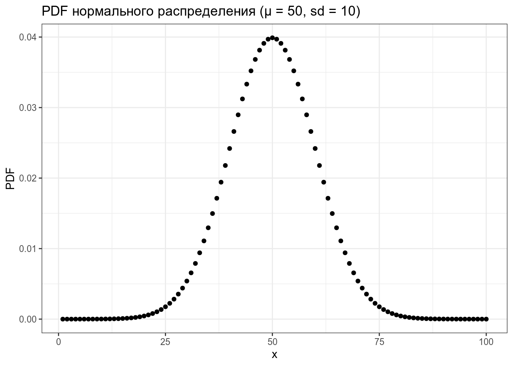
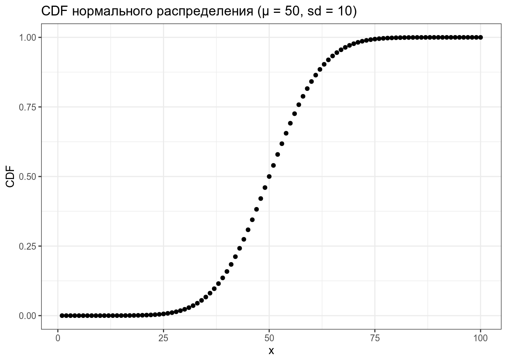
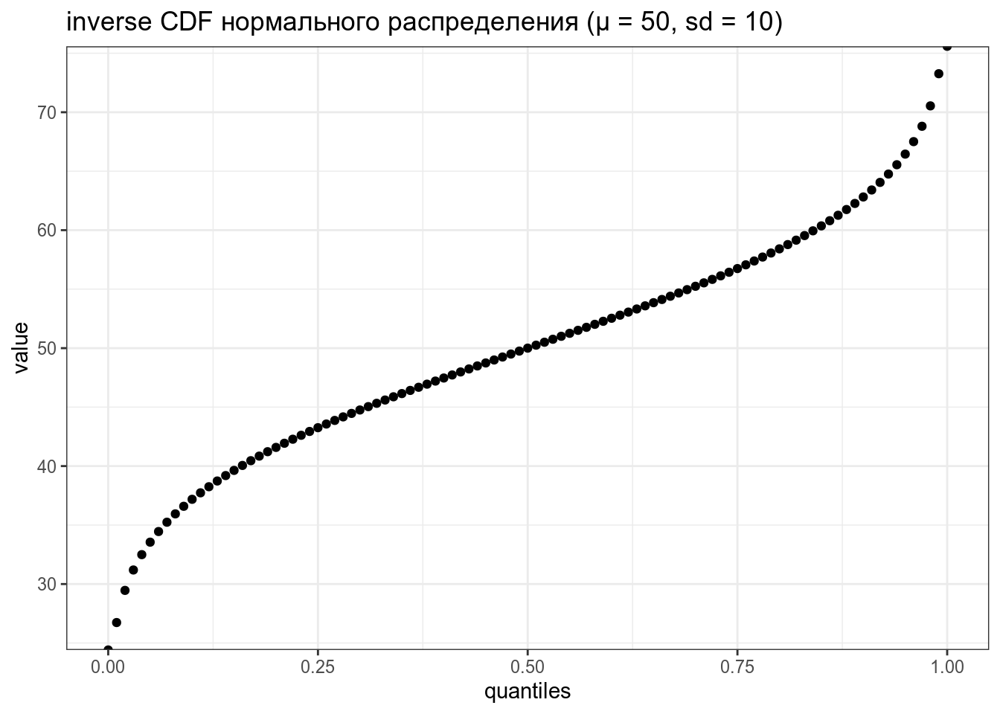
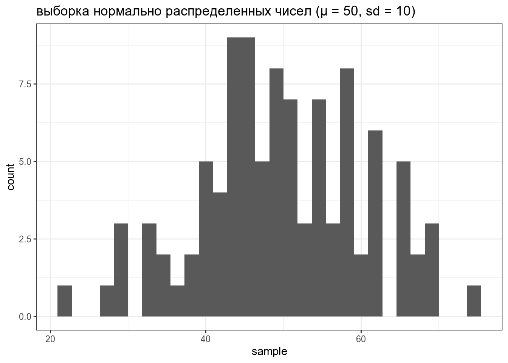
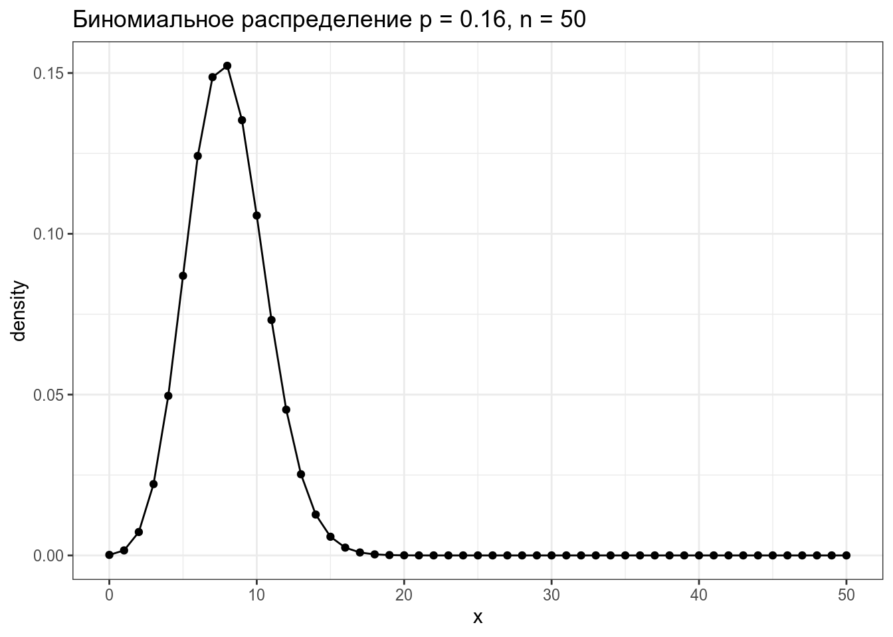
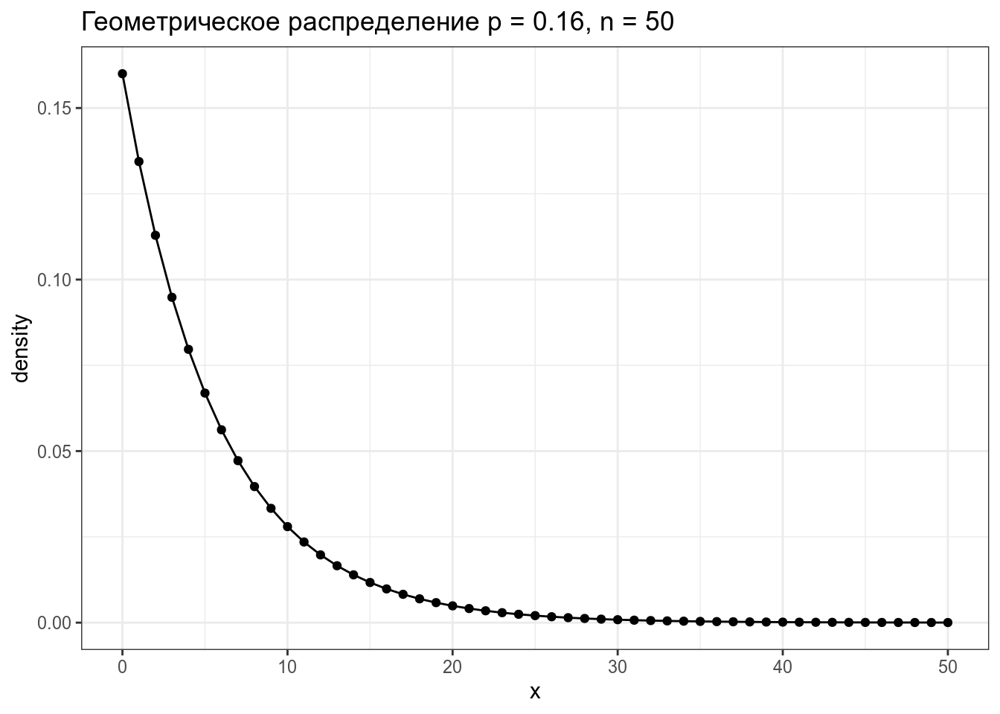
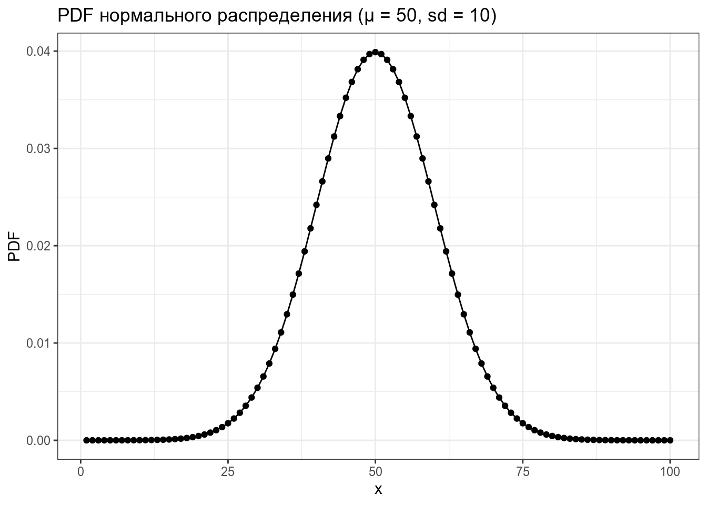
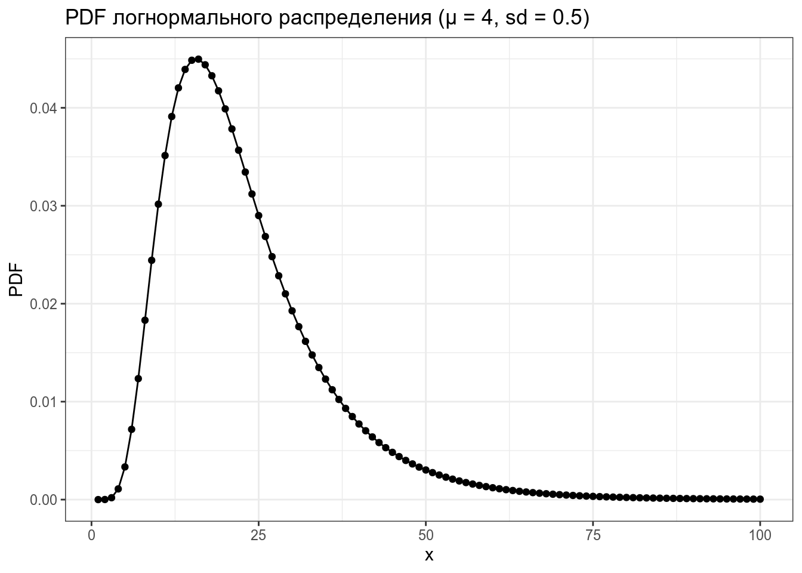
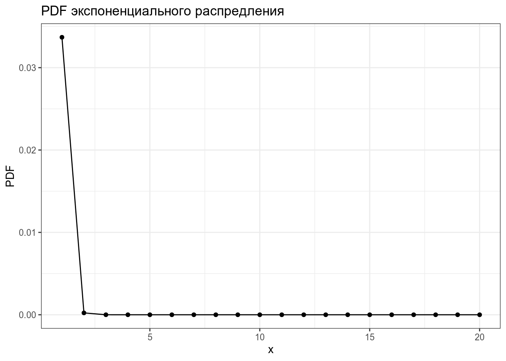
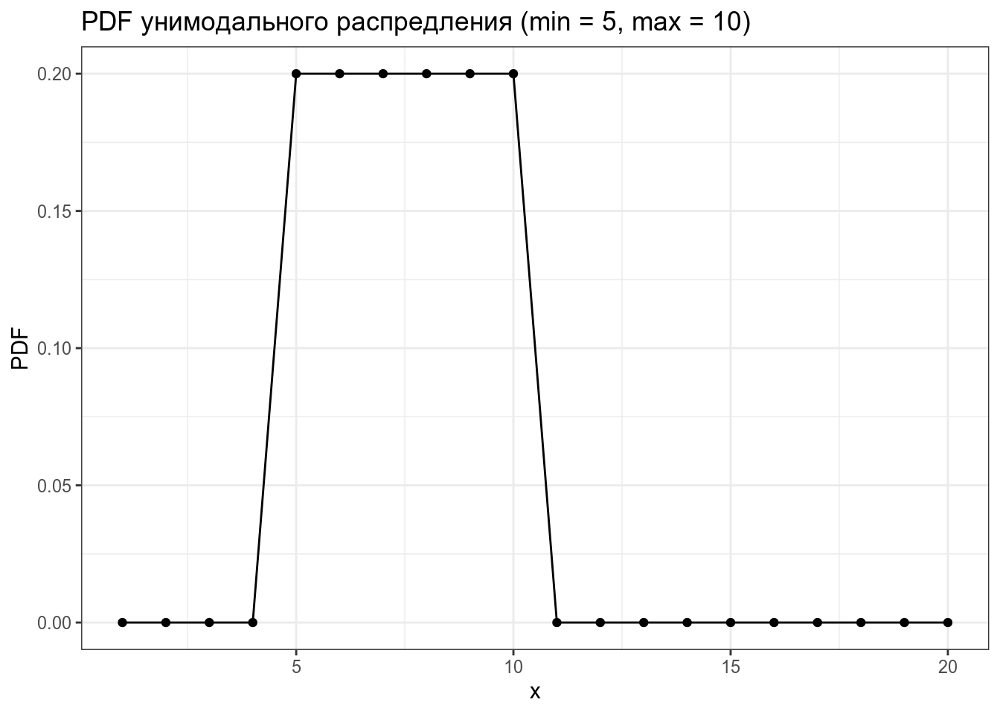

2 Распределения
2.1 Распределения в R
В R встроено какое-то количество известных распределений. Все они представлены четырьмя функциями:
d...(функция плотности, probability density function),p...(функция распределения, cumulative distribution function) — интеграл площади под кривой от начала до указанной квантилиq...(обратная функции распределения, inverse cumulative distribution function) — значение p-той квантили распределения- и
r...(рандомные числа из заданного распределения).
Рассмотрим все это на примере нормального распределения.
tibble(x = 1:100,
PDF = dnorm(x = x, mean = 50, sd = 10)) %>%
ggplot(aes(x, PDF))+
geom_point()+
labs(title = "PDF нормального распределения (μ = 50, sd = 10)")
tibble(x = 1:100,
CDF = pnorm(x, mean = 50, sd = 10)) %>%
ggplot(aes(x, CDF))+
geom_point()+
labs(title = "CDF нормального распределения (μ = 50, sd = 10)")
tibble(quantiles = seq(0, 1, by = 0.01),
value = qnorm(quantiles, mean = 50, sd = 10)) %>%
ggplot(aes(quantiles, value))+
geom_point()+
labs(title = "inverse CDF нормального распределения (μ = 50, sd = 10)")
tibble(sample = rnorm(100, mean = 50, sd = 10)) %>%
ggplot(aes(sample))+
geom_histogram()+
labs(title = "выборка нормально распределенных чисел (μ = 50, sd = 10)")
Если не использовать set.seed(), то результат работы рандомизатора нельзя будет повторить.
2.1.1 Task 1
Какое значение имеет 25% квантиль нормального распределения со средним в 20 и стандартным отклонением 90 (ответ округлите до 3 знаков после запятой).
2.1.2 Task 2
Если взять данные из базы данных фонетических инвентарей PHOIBLE (Moran, McCloy, and Wright (2014))
mean sd 34.98158 13.37857
2.2 Категориальные переменные
2.2.1 Биномиальное распределение
Биномиальное распределение — распределение количетсва успехов эксперементов Бернулли из n попыток с вероятностью успеха p.
\[P(k | n, p) = \frac{n!}{k!(n-k)!} \times p^k \times (1-p)^{n-k} = {n \choose k} \times p^k \times (1-p)^{n-k}\] \[ 0 \leq p \leq 1; n, k > 0\]
tibble(x = 0:50,
density = dbinom(x = x, size = 50, prob = 0.16)) %>%
ggplot(aes(x, density))+
geom_point()+
geom_line()+
labs(title = "Биномиальное распределение p = 0.16, n = 50")
2.2.2 Геометрическое распределение
Геометрическое распределение — распределение количетсва эксперементов Бернулли с вероятностью успеха p до первого успеха.
\[P(k | p) = (1-p)^k\times p\] \[k\in\{1, 2, \dots\}\]
tibble(x = 0:50,
density = dgeom(x = x, prob = 0.16)) %>%
ggplot(aes(x, density))+
geom_point()+
geom_line()+
labs(title = "Геометрическое распределение p = 0.16, n = 50")
2.2.3 Распределение Пуассона
2.3 Числовые переменные
2.3.1 Нормальное распределение
\[P(x) = \frac{1}{\sigma\sqrt{2\pi}}\times e^{-\frac{\left(x-\mu\right)^2}{2\sigma^2}}\]
\[\mu \in \mathbb{R}; \sigma^2 > 0\]
tibble(x = 1:100,
PDF = dnorm(x = x, mean = 50, sd = 10)) %>%
ggplot(aes(x, PDF))+
geom_point()+
geom_line()+
labs(title = "PDF нормального распределения (μ = 50, sd = 10)")
2.3.2 Логнормальное распределение
\[P(x) = \frac{1}{\sqrt{x\sigma2\pi}}\times e^{-\frac{\left(\ln(x)-\mu\right)^2}{2\sigma^2}}\]
\[\mu \in \mathbb{R}; \sigma^2 > 0\]
tibble(x = 1:100,
PDF = dlnorm(x = x, mean = 3, sd = 0.5)) %>%
ggplot(aes(x, PDF))+
geom_point()+
geom_line()+
labs(title = "PDF логнормального распределения (μ = 4, sd = 0.5)")
2.3.3 Экспоненциальное распределение
\[P(x)= \lambda \times e^{-\lambda x}\]
tibble(x = 1:20,
PDF = dexp(x = x, rate = 5)) %>%
ggplot(aes(x, PDF))+
geom_point()+
geom_line()+
labs(title = "PDF экспоненциального распредления")
2.3.4 Унимодальное распределение
tibble(x = 1:20,
PDF = dunif(x = x, min = 5, max = 10)) %>%
ggplot(aes(x, PDF))+
geom_point()+
geom_line()+
labs(title = "PDF унимодального распредления (min = 5, max = 10)")
2.3.5 Что еще почитать про распределения?
В интернете много ресурсов, но вот еще есть вот этот. А здесь можно найти соответсвия распределений и сопряжённым к ним априорных распределений.
Moran, Steven, Daniel McCloy, and Richard Wright, eds. 2014. PHOIBLE Online. Leipzig: Max Planck Institute for Evolutionary Anthropology. https://phoible.org/.
References
Moran, Steven, Daniel McCloy, and Richard Wright, eds. 2014. PHOIBLE Online. Leipzig: Max Planck Institute for Evolutionary Anthropology. https://phoible.org/.